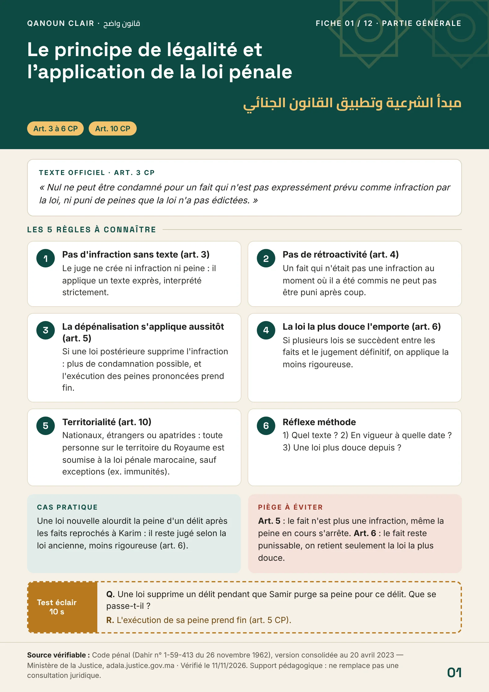

← Toutes les fiches · Qanoun Clair · Fiche 01 / 12 · Partie générale
مبدأ الشرعية وتطبيق القانون الجنائي
Télécharger la fiche (PDF)Agrandir la ficheTélécharger le pack complet (PDF, 13 pages)

Support pédagogique destiné à la révision et à l’information du public. Il ne remplace pas la consultation d’un avocat.